{kind=link}
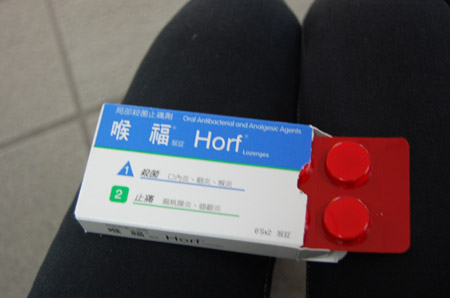
怪しい宿のチェックアウトをし（というか、勝手に鍵を置いて出て行く） 台北駅に。今日はちょっと日差しが出ていい天気だー。 口開けて、ノドをお日様にあてて日光消毒してみる（私流荒療治）{kind=link}
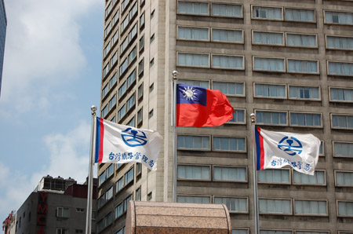
にしても、台北駅格好良いねー。 無駄に大きい駅って、その街の願いとか発展への希望が込められている感じでいいな。{kind=link}
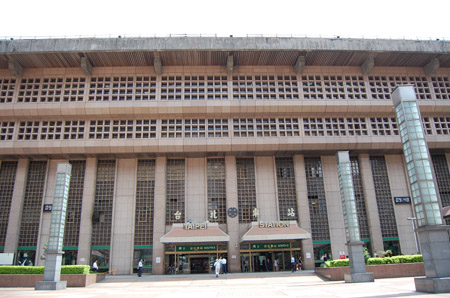
入り口はこんな感じ。{kind=link}
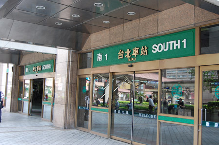
パタパタと切り替わる時刻表と、切符売り場（有人）。 東京駅の新幹線乗り場付近のつまらなさと比較しちゃうよ！{kind=link}
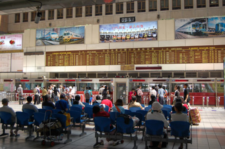
天窓からさんさん。 ステキだー{kind=link}
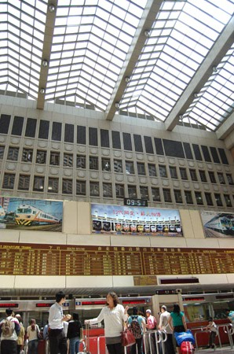
というわけで、台北からはバスを使わず、新幹線を使って桃園空港まで行ってみるです。 券売機で買おうとしたのだけど、どういうわけかカード（JCB、VISA）が通らず、仕方が無く窓口に行って筆談で購入。窓口だとなぜかカードが通る不思議…{kind=link}
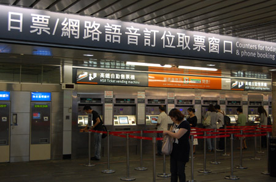
20分しか乗らないから料金も135NTD。これは指定だから、自由席より5NTDだけ高い。{kind=link}
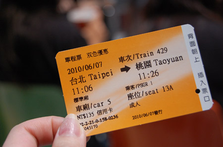
なぜか駅のあちこちで見かけるブリキの人形。{kind=link}
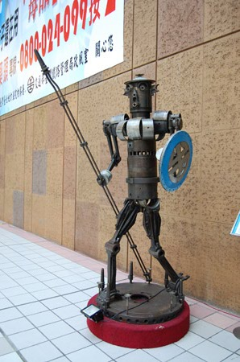
うおー。転車台！欲しいー！{kind=link}
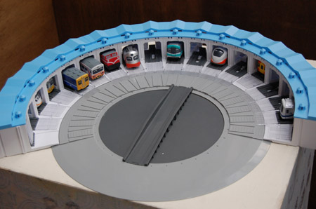
駅弁！「台鐵便當」60NTD。180円。{kind=link}
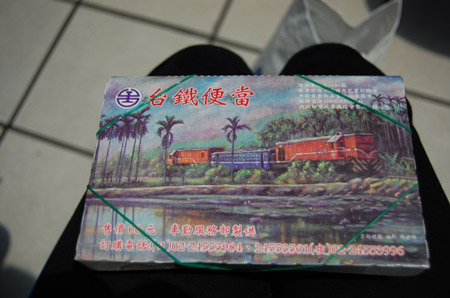
中はこんな感じの排骨飯。湯葉と排骨、高菜、漬け物、玉子。甘めの味わい。 東京駅の駅弁と違って。ほっかほか！車内で食べるのが待ちきれずに、思わず構内で食べちゃう。 乗車時間20分だしなー…ということで、10分分くらいのお弁当を残しておく。{kind=link}
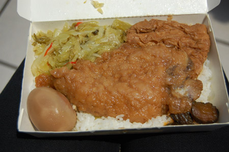
改札を通過。{kind=link}
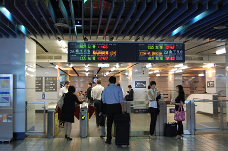
じゃーん！台湾高速鉄道（略称「高鐡」、「HSR」（Taiwan High Speed Rail））700系なのです！正しくは700T型。700系の改良型です。{kind=link}
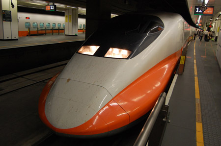
オレンジのラインがいいねー。マンゴー色。{kind=link}
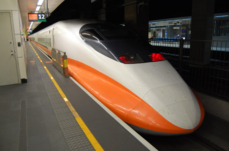
乗務員のおねえさんのスカートもマンゴー色。{kind=link}
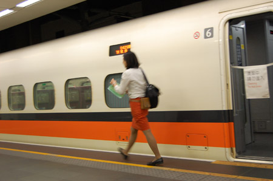
電光掲示板。{kind=link}
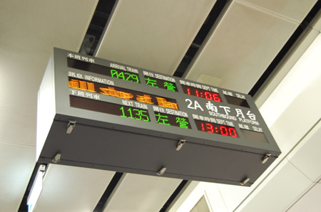
客室内はそのまんま{kind=link}
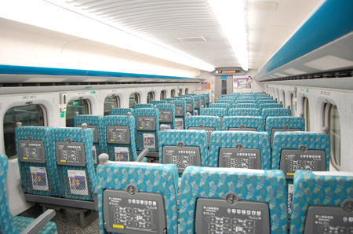
日本と同じだわー{kind=link}
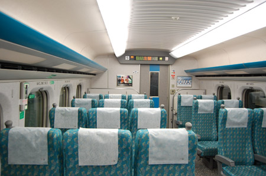
こんなのも。 しかし探検する暇もなく、あっという間の20分。トンネルが多いのが悲しいなー。{kind=link}
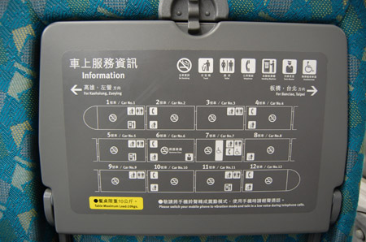
そうそう、台湾はペットボトルのお茶がうんまかった。ふつうのは20NTD、これはちょっと高い25NTDだけど、さらに美味しい。{kind=link}
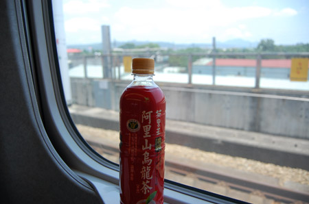
ああっというまに桃園駅前バスターミナル{kind=link}
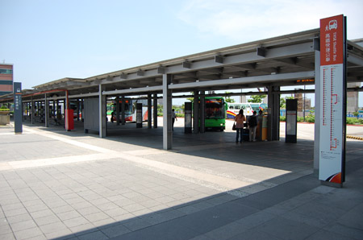
空港行きリムジンバス30NTD{kind=link}
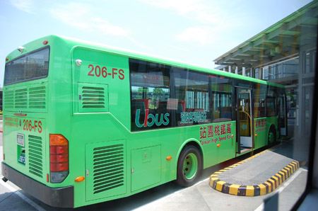
リムジンバスは台北駅→桃園空港のバスとかと比べると明るくてキレイ。 駅から空港までは20分ぐらい。 新幹線とあわせて45分ぐらいで台北から空港に到着。バスより正確でいいかも。{kind=link}
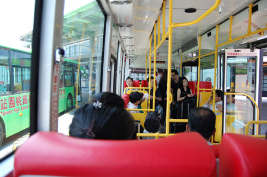
柿男くん！ノートPC無くなってるよ！→去年の柿男くん{kind=link}
{kind=link}
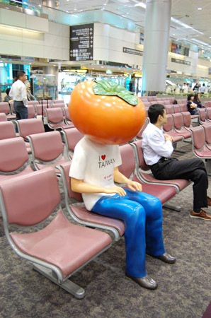
台湾花博覧会のマスコット。かわええ{kind=link}
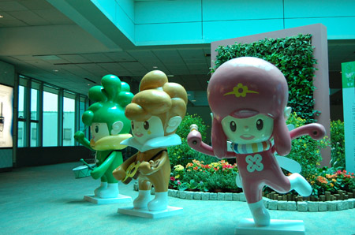
さーて帰るかー。 飛行機はほぼ満席。{kind=link}
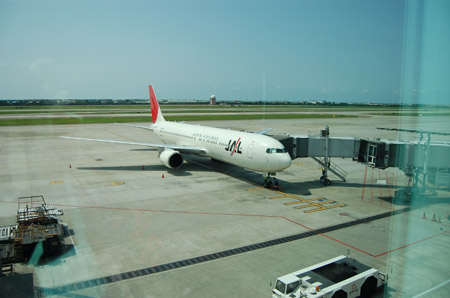
なんだかヘルシーメニュー。 すき焼きとサラダとか。プレミアムモルツと赤ワイン。{kind=link}
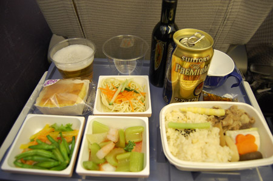
前は、アルコール類頼むと必ずくれた「おかき」が、今は申告制。 もらえずに口寂しくしている人が多かった。私はなぜかわんさか貰った。ひもじそうにしてたのか。{kind=link}
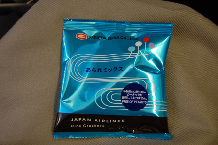
今回の旅行で唯一トラぶったのが成田の手荷物。 電光掲示板の見方が分からず、気がついたら、レーンの横に放置されてた。 わかんないのは私だけ？日本ルールに適応できてないのか。{kind=link}
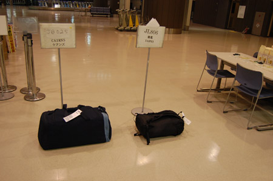